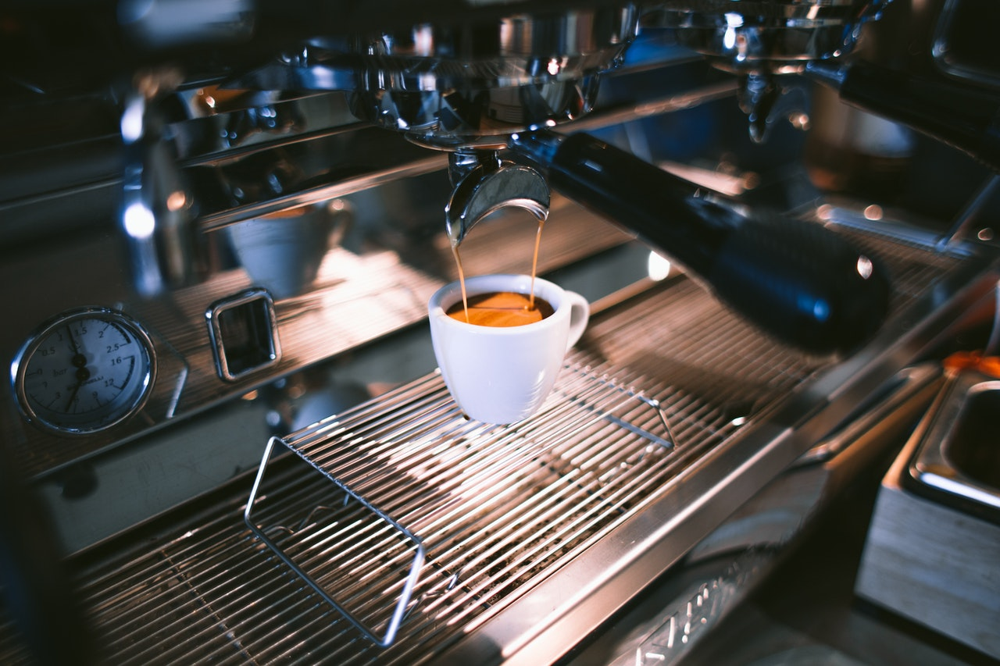

Espresso italian este o artă, este rezultatul unei vechi traditii. O ceașcă de bautură obținută prin trecerea sub presiune de apa caldă a cafelei măcinate. Prin definiție, espresso italian este născut din amestecul a diferite tipuri de cafea din diferite părți ale lumii, care se combină pentru a crea o aromă bogată și inegalabilă.
Un espresso de 30 mililitri are în jur de 40-75 miligrame de cofeină în el. O cafea la ibric sau altă metodă de preparare, în cana uzuală de 240 mililitri, are în jur de 95-200 miligrame de cofeină. La 100 ml un espresso chiar este mai tare decât o cafea la ibric, dar comparația nu se face așa: oamenii care beau espresso - beau doar 30 ml; oamenii care beau cafea la filtru sau la ibric, vor bea o cană mult mai mare și deci în organismul lor intră mai multă cofeină.
Dacă vreți și mai puțină cofeină, beți ristretto. Acesta este un espresso și mai scurt, cam la jumătate, extras deci într-un timp și mai scurt.